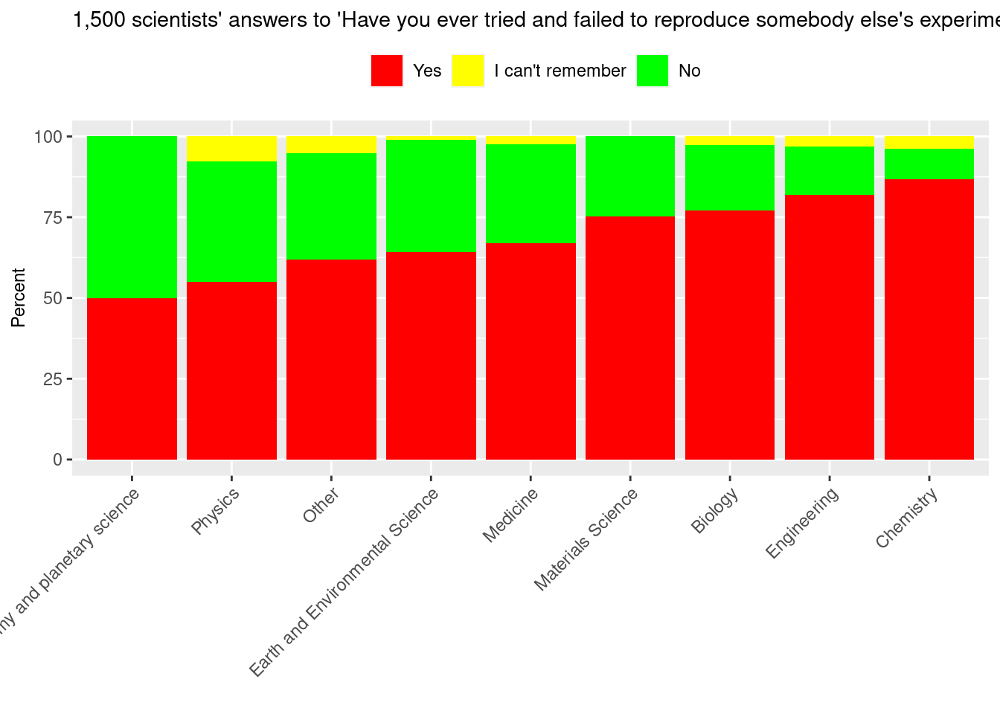

1 Introduction
1.1 What are the computational and data sciences?
In this book we are concerned with two closely related fields:
Computational science (also called scientific computing) combines computer science (i.e. the theory of how computers work) with applied problems.
Data science similarly combines statistics (i.e. the mathematical theory of analyzing data) with applied problems.
Basically we want to know how to apply computers and data to investigate scientific questions. In this book we will focus on questions from the natural and social sciences (i.e. physics, biology, economics, psychology, etc.), but the techniques and methods can be applied outside of science, too.
1.2 Why this book?
Many books on these topics (particularly data science) are interested in business problems. Businesses are typically concerned with learning about the future (typically so that they can increase their profits).
There is nothing inherently wrong with this, and indeed scientists are sometimes interested in predicting the future as well. However scientists are more generally interested in the broader goal of understanding how the world works.
Although scientists and business people have to worry about many of the same problems when dealing with computers and data, our different end goals mean that we put more emphasis on different parts of the process.
As scientists, we want to learn the underlying truths of the universe.
We want to make sure that any discoveries we make are real (we don’t want to fool ourselves, a pit that is surprisingly easy to fall into). We therefore care about making sure that our experiments are reproducible. (I.e. if we have discovered something real, any other scientist should be able to follow our steps to get to the same result.)
Since we care about understanding over prediction, we prefer simpler mathematical approaches that are easier to interpret.
As scientists we should try to focus on simplicity and clarity over glamour!
That’s not to say that a data scientist at a company shouldn’t care about reproducibility, simplicity, and clarity. But if a company can make a million dollars tomorrow with a sexy but complicated and hard-to-reproduce analysis, then they should do so! But this would be bad practice for a scientist.
1.3 The Scientific Method
Why don’t we still believe that the sun is the flaming chariot wheel of the ancient Greek god Apollo as he drives across the sky each day? Why do we now have effective medicines and treatments for many illnesses that were a death sentence for our ancestors?
The answer, in case you haven’t guessed, is science. Science is the reason that human progress has exploded since the scientific revolution of the 16th and 17th centuries. And science offers our best path forwards for making future progress and confronting the challenges that we will inevitably face in the coming centuries.
We can think of science as a game: humanity versus the unknown. Each field of science (biology, physics, psychology, etc.) is like a team in this great game. And just like regular sports teams, each scientific field uses slightly different tactics to play the game, because the type of thing that a scientist studies influences how they can go about experimenting on it.1
Despite the range of techniques used by different scientists, and the conventions followed by different scientific fields, all scientists agree on the rules of the game itself. This shared set of rules is called the scientific method.
Actually, that’s a simplification. There is not actually a single universally agreed upon definition of what the scientific method actually is, but broadly speaking it follows these principles:
A scientific theory or hypothesis must make testable predictions about how the world behaves.
We test each theory by doing experiments that have the ability to disprove that theory.
We can only choose between theories based on the outcomes of these experiments.2
What this looks like in practice can vary widely: a biologist could be out in the field observing living organisms or in the laboratory looking at cells; a physicist might be coming up with precise mathematical theories or building a telescope to go into space to observe distant galaxies; an economist might be collecting data about people’s behavior or the growth of economies.
In the 21st century, a unifying feature of all of these scientists is that they are using computers to analyze their data or run experiments. The scientific method tells us nothing about how we should use computers, only that whatever we do needs to adhere to the principles outlined above.
The scientific method tells us very little about how we should go about using computers, so let’s consider how we might do so.
1.3.1 Reproducibility and replicability
As scientists we are trying to discover truths about the universe. These truths are universal. If I experience gravity, so should you (and everyone else). And if two scientists conduct the same experiment independently, they should both get evidence that is consistent with that universal truth.
There are two separate concerns when it comes to the repeatability of science.
The first is that if you and I analyze the same data (e.g. we share the same dataset), in the same way, we should arrive at the same result. This is generally called reproducibility.
It’s also possible for us to obtain our own datasets (e.g. we each run our own experiment, sometimes completely different experiments) with a view to investigating that universal truth. I might measure the Earth’s gravitational field by dropping rubber balls out of a second floor window, whereas you might use the speed of a pendulum’s swing. However, we should get results that are consistent with each other. This is called replicability.
We reproduce analyses; we replicate experiments.3
1.3.2 How reproducible is modern science?
The rest of this book is focused on how to use computers and data in ways that are good scientific practice. However, let us take a moment to talk more about the importance of reproducibility.
Unfortunately, scientists are not rewarded for making sure that their analyses are reproducible, or for checking that they can reproduce the work of other scientists.
In a recent survey of 1500 scientists (Baker 2016), a shockingly high percentage said that they were unable to reproduce another scientist’s work:
Consider how the process of modern science works:
The scientist needs to get money to pay for their future work, so they apply for grants. In the USA, a lot of grant money is distributed by the federal government; other grants may come from private organizations. However, there is never enough money for every scientist who applies, and so the grant distributors have to pick their favorites. And what makes a proposal likely to be funded? Doing exciting, new research (not routine reproduction of other scientists existing work).
Even if you decide to reproduce an experiment, its not always simple to do so. Scientists are supposed to describe the steps they followed in their experiment, but they do not always provide enough details for somebody else to replicate their work exactly. Sometimes, scientists can’t even reproduce their own work (this is not uncommon in laboratory experiments in chemistry or biology, where you are working with minuscule substances that you hope are in your test tubes, but which might be subtly different from one day to the next).
In the computational and data sciences, there are often subtle choices we can make in terms of parameter values, or choice of algorithm, or simply the way that you write your code, which can significantly alter the output of your computer program. Thus you may also need the original computer code that was used for the analysis!
If the experiment is the analysis of an existing dataset, then anyone wishing to reproduce the work will need access to the same data and code. Unfortunately, scientists do not always make their data or code available when they publish their results.
Sometimes this is for good reasons (e.g. protecting the privacy of the people in the dataset, or not publishing the genetic sequence of a dangerous virus).
Other times the reasons might be more self-serving. For example, if you were able to get a large grant of money to conduct a complex experiment, you might want to publish several different analyses of the results. Unfortunately there are no prizes for second place in science, and the first person to make a discovery gets the glory. If somebody else publishes a discovery that you were about to publish yourself, then scientists call this getting “scooped”. To avoid getting scooped, you might decide to restrict access to your data until you have published all the analyses of it that you want to.
And sometimes scientists don’t have a good reason for not publishing their data/code, except that it wasn’t required of them.4
1.3.3 What we can do
Fortunately science has recognized its reproducibility problem over the past decade, partly due to several major scandals. Since the root cause of the problem is due to misaligned incentives, science has adapted to change these incentives.
For example:
In the USA, scientists funded by the federal government are typically required to make data available when they publish their results.
To guarantee publication of your data while preventing another scientist from “scooping” your work, you can restrict data access in responsible ways, typically by publishing the data at the same time as your study but placing an embargo on it. This delays the release of the data, typically by several months or years, until you have had a chance to publish your other analyses, but ensures that it will eventually become available to any other scientists who want to check your work or extend upon it.
New initiatives like the Center for Open Science are promoting the sharing of data and code, for example by creating the Open Science Framework for new studies.
There are now various websites that will permanently archive code and data so that it can be easily shared with other researchers, such as DataDryad and FigShare.
Since this is a book on analyzing data rather than conducting experiments, we will focus on reproducibility rather than replicability.
For example, a microbiologist can grow bacteria in a lab and do pretty much whatever they want experimentally, whereas a psychologist studying human behavior is much more constrained by what is ethically acceptable to do to other humans.↩︎
If all of your experiments suggest that a theory is wrong, you can’t decide to stick with it just because you like it for some other reason. For example, let’s say that you hypothesize that all cows are blue. When you start finding non-blue cows in the real world, you can’t claim that your theory is still correct because blue is your favorite color.↩︎
Except in the minority of scientific fields that define these terms in different, or even opposite, ways.↩︎
This is a problem of both the scientists, as well as science as a discpline for not holding ourselves to higher standards.↩︎